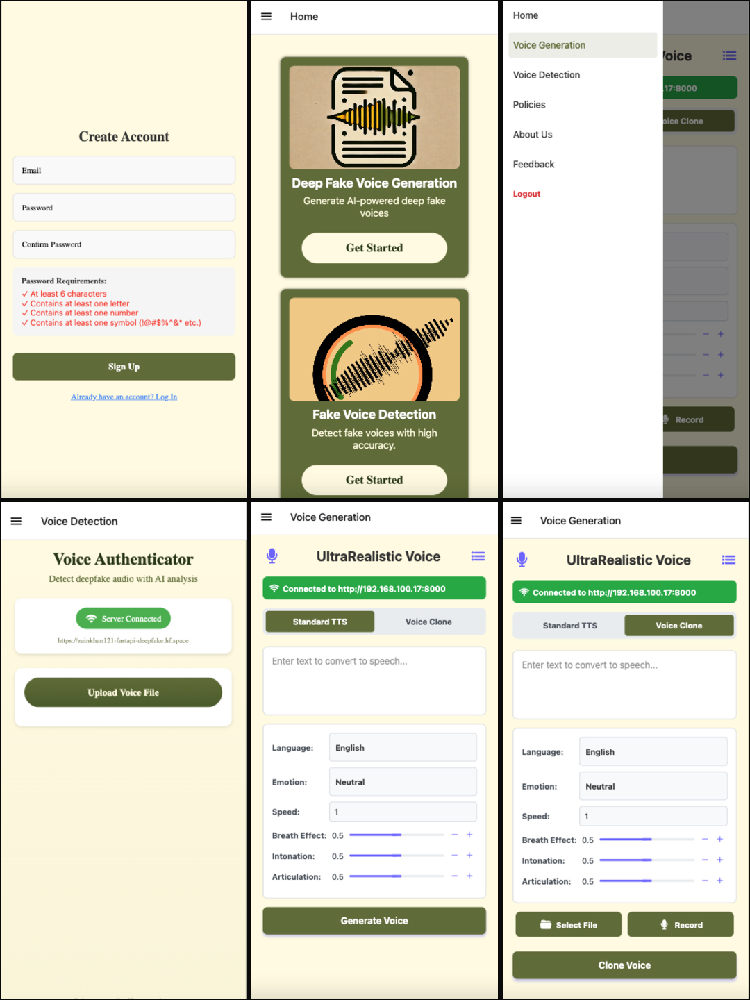
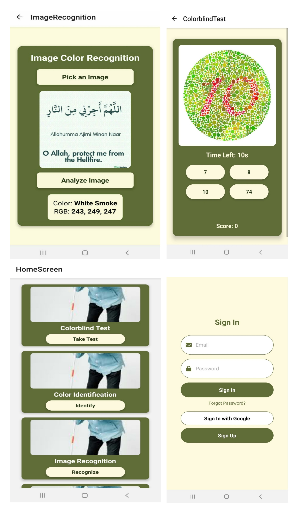
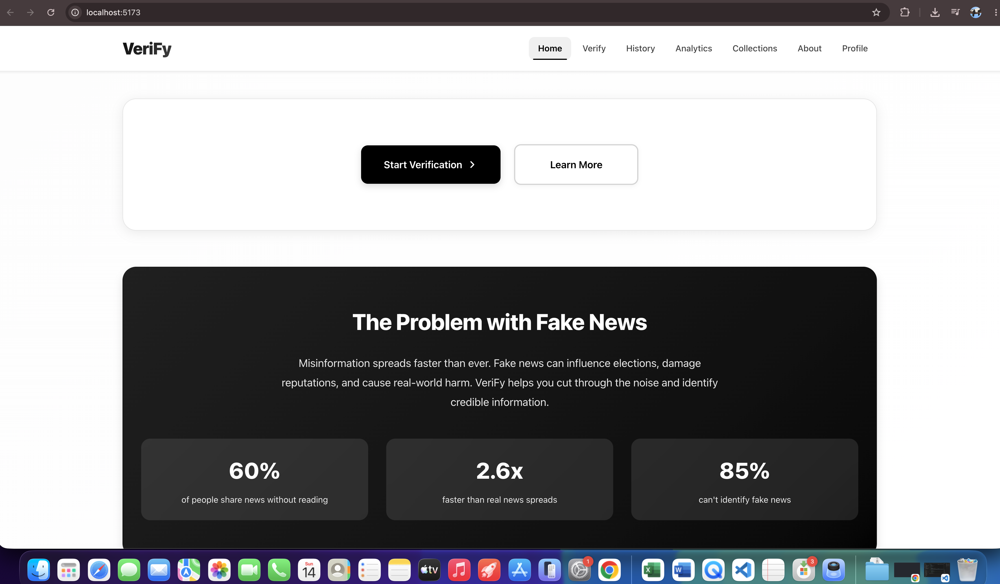
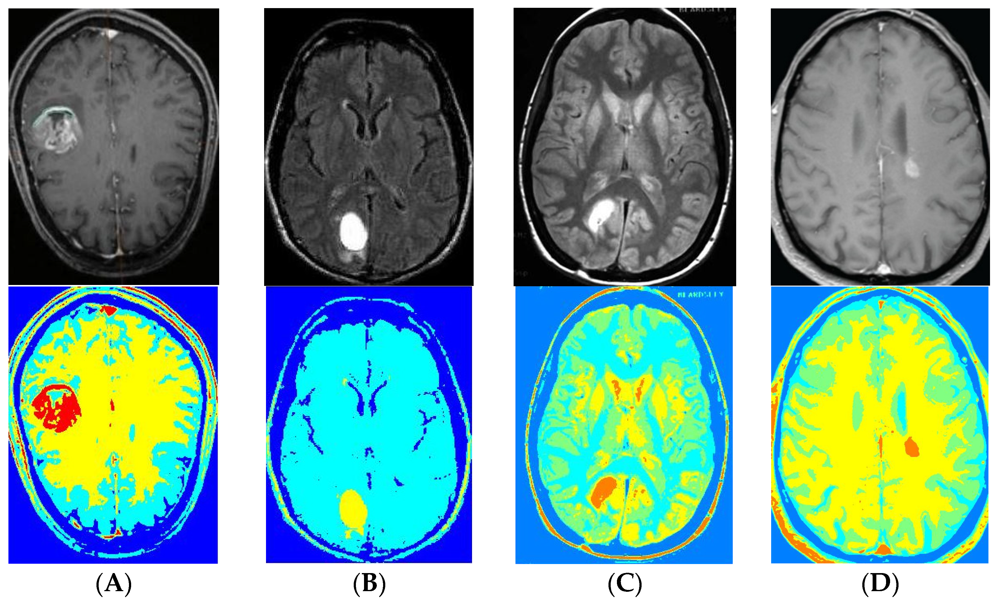
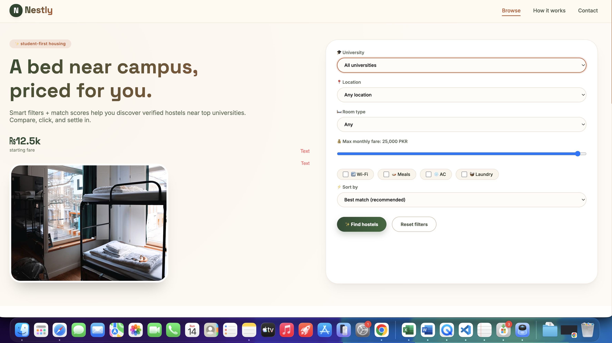

Projects.
End-to-end AI systems — each one trained, deployed, and shipped to real users.
Hybrid Wav2Vec2 + WaveNet system for classifying synthetic vs. real audio. Trained on balanced real/generated datasets and deployed as a real-time FastAPI service integrated into a React Native mobile app.

Real-time and image-based color recognition app for colorblind users, with a built-in colorblind test. Built with React Native for a smooth, mobile-first experience.

AI-powered campus assistant with faculty search,Chatbot, intelligent auto-correction, campus analytics, and real-time student info management in a modern mobile interface.

Multi-model AI chat app integrating GPT, Gemini, and Claude with real-time chat, voice interaction, AI-powered tools, and seamless user management.

AI-based fake news detection and verification system with claim verification, source analysis, fact-checking pipeline, and news history tracking.

CNN trained on MRI scan datasets to classify brain tumor presence and type. Achieved 98% accuracy with explainability via Grad-CAM visualizations.

CNN-based model classifying malignant and benign lung nodules from CT scans, achieving 96% accuracy for early-stage cancer screening.
ML-based risk assessment app with an intuitive UI for predicting diabetes likelihood from patient inputs with high accuracy.
Collaborative filtering system delivering personalized hostel recommendations based on user preferences and behavioral patterns.

Location-aware React Native app providing accurate prayer timings and tracking personal prayer streaks with a clean, minimalist interface.